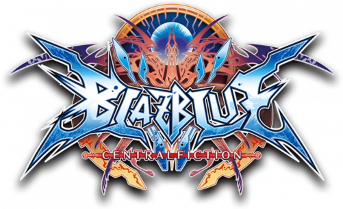
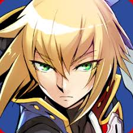
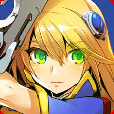

Blazblue Central Fiction

Blazblue Central Fiction é um jogo de luta 2D desenvolvido pela Arc System Works e publicado pela Aksys Games. É o quarto jogo da série Blazblue e foi lançado em 2016 para PlayStation 4, Xbox One e PC. O jogo apresenta uma história complexa e personagens únicos, cada um com suas próprias habilidades e estilos de luta.
FAQs
Personagens
Mecânicas Universais

Recursos (Em Breve)
